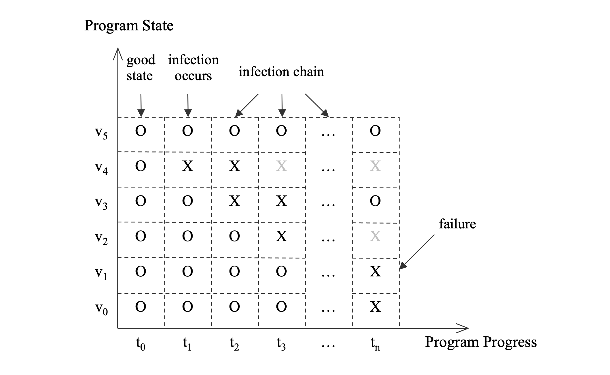

更新
2024-07-05
本书已经出版
由于本库的草稿是我之前一个人写的，所以质量和正确性都不如经过两位作者和出版社编辑审阅和校正过的书稿。
如果你想阅读更加完善的版本，推荐购买正版书籍。
调试内存损坏
调试内存损坏真正的挑战是观察到的程序错误没有揭露导致它的错误代码。一个程序通常在有bug的代码作出错误的内存访问时不会显示任何症状。但是程序其中一个变量被意外地改变为一个不正确的值；在一些文献中它被叫做传染。这个变量随着程序继续运行会感染其他变量。这些问题传播最终会发展为一个严重的失败：程序要么crash要么生成错误的结果。因为原因和结果的距离，当错误被注意到时候，最后的变量和正在运行的代码通常跟实际的bug不相关，可以展露出很多在时间和位置的随机性。
图3-1展示了一个典型的从初始感染变量到最终程序失败的传染链。水平轴代表以时间为刻度的程序的运行（每一个时间事件代表一次程序状态改变）。纵轴是程序的状态，即变量集合。有符号”0“的变量是有效状态，而”X“表示感染了。但是，它不是灾难性的。程序随t2,t3,等等往前进，直到tn。在时间t2，变量v3被感染。在t3，变量v2被感染。在这个时间点，变量v4出了作用域（它的”X“已经灰掉）。当最后的感染变量v1在tn搞垮程序，它已经跟最初的感染点也就是在t1的变量v4距离很远了。注意变量v2已经跑出了作用域和变量v3已经从感染状态改成了有效状态。这是有可能的，因为程序可能正确地处理了错误的数据尽管它不能反省性的定位和修正错误的原因。对于工程师来说，给定现有的复杂性和各种程序可以达到错误状态的可能性，搞明白第一个感染的变量v4和相关的有错误的代码无疑是非常困难的。

下面的例子展示了违规的代码是怎样没有在犯罪现场留下让我们调查的痕迹。这个简单的程序往一块释放后的内存写入。它最终在一个内存分配函数crash，没有显示一点跟罪犯相关的东西。
#include <stdlib.h>
#include <stdio.h>
#include <string.h>
void AccessFree()
{
// a temporary array
long* lArray = new long[10];
delete lArray;
// Accee freed memory and corrupt it.
lArray[1] = 1;
}
void Victim()
{
void* p = malloc(32);
free(p);
}
int main(int argc, char** argv)
{
// program initialization
void* p = malloc(128);
char* str = strdup("a string");
free(p);
// The initial infection
AccessFree();
// more work ...
// Failure due to previous infection
Victim();
return 0;
}
在使用了Ptmalloc作为默认内存管理器的Linux Redhat发行版运行这个程序，当程序接收到段错误信号的时候，我们将会看到下面的调用栈。线程正在调用函数Victim，简单的在尝试向堆分配32字节。但是，正如在前面章节展示的，这个函数覆写了一块释放的内存因此损坏了堆元数据，更准确的说是用来记录空闲块链表的指针。这个问题直到为了重用空闲块的时候访问指针才会出现。
Program received signal SIGSEGV, Segmentation fault.
0x0000003f53a697e1 in _int_malloc () from /lib64/tls/libc.so.6
(gdb) bt
#0 0x0000003f53a697e1 in _int_malloc () from /lib64/tls/libc.so.6
#1 0x0000003f53a6b682 in malloc () from /lib64/tls/libc.so.6
#2 0x00000000004006ea in Victim () at access_free.cpp:17
#3 0x0000000000400738 in main (argc=1, argv=0x7fbffff4b8) at access_free.cpp:34
在这例子，通过简单地审阅代码bug很明显。但是对于不简单的程序，它不会是一个有效的方法。不从例子的原因出发，内存损坏难以调试是清楚的。程序在失败时的状态通常没有足够信息来下任何结论。
初始调查
基本上，调试内存损坏是从失败的地方追踪回提交这个开始感染的罪魁祸首代码。如果不是不可能，这会是很难的，即使看上去简单的情况也如此，像上面的例子。但是，我们应该尽可能地发现越多的感染变量，这样我们可以离有问题的代码更近。这个恢复传染链的分析过程需要，最小程度上，程序的深入知识，架构相关的信息和调试器的经验。
当一个问题发现的时候，第一个动作是调查程序的当前状态，即感染链的末尾。这个分析很重要因为它决定了接下来我们有采取的措施。有许多各式各样的方法和风格来获取和分析失败程序的大量信息。下面的列表试图描述一些基本但可触摸的步骤开始步骤。每一个步骤可以缩小搜索的范围和给出下一步的指导。一些步骤仅仅适用于一些场景，如堆分析也许只有在被感染的变量是从堆分配来的才有必要。
-
失败错误的直接原因。这是任何调查的开始地方。一个可以看到的失败必然是源代码最后一条语句导致的，或者更准确地说是CPU正在运行的最后一条指令。在crash的情况下很显然但是在不是crash的失败情况下可能有些困难。crash的情况可能会与信号或者进程接收的说明异常退出的原因的异常结合。比如，段错误信号或者AV（访问违规）异常意味着不属于任何进程段集合的内存地址的无效访问；信号bus错误意味着不对齐的地址内存访问；信号非法指令意味着一个坏的函数指令；当一个异常抛出，程序没有一个处理器，未处理的异常发生。C++运行库的实现的默认动作是处理未处理的异常，通常是生成一个core dump文件和停止程序。
-
定位最后一个感染的变量和它是怎么让程序失败的。程序失败通常跟最后一个指令试图访问的地址关联。这个地址直接和间接通过感染的变量计算而来。有些时候地址简单的是很容易确定直接原因的变量的值。但是有时候地址是多个计算步骤和内存解引用的结果，这需要仔细的检查在计算的复杂表达式。比如，访问一个变量或者它的数据成员指向的内存可能会因为引用的地址是无效的如空指针而失败；调用对象的虚拟函数可能因指向对象虚拟表的无效指针而失败；读取一个对象的数据成员因不对齐而失败等等；变量可能是传入的参数，本地变量，全局对象或者编译器创建的临时对象。我们应该对变量的存储类型、作用域和当前状态有一个清楚的理解。它是在线程栈、进程堆、模块的全局数据段、寄存器里或者属于线程的特定存储对问题的原因有很重要的影响。在大多数情况下，变量是堆数据对象。我们应该确保底层的内存块与变量符合和内存看在使用还是空闲。如果它是空闲的，我们一开始就不应该访问它。
-
检查所有在当前线程上下文的其他变量。注意那些可以影响被感染的变量。它们中的一些可能也被感染了。失败的线程上下文包括所有的寄存器值、本地变量、传入的参数、被访问的全局变量。通过审阅代码和线程上下文，我们可以更好地梳理感染链是什么样的。
-
如果没有结论，我们应该检查感染的变量是不是共享的和潜在地被其他线程访问。如果是的，过一过其他线程的上下文是有必要的。如果幸运，我们可以找到在其他线程的罪魁祸首。但是，这样的好运不是那么容易有的。即使我们没有看到其他线程破坏了感染的变量，通过观察此刻其他线程在做什么，仍然可以让我们知道问题背景的总体情况。这最终会帮我们建议更有现实意义原因的理论。
-
如果涉及到位置的内存，了解感染区域的内存模式对弄明白它是怎么感染即被谁感染通常是有效的。一些模式具有揭露性和直接连接着原因。比如，有可认识内容的字符串；具有区别性的签名的熟知的数据结构；具有调试符号的指令或者全局对象；指向其他有效内存地址的指针等等。当我们用ASCII格式打印出一块内存，识别字符串是容易的。指针则不是那么明显。但是有一些方式来区别它们与整形、浮点数和其他数据类型：检查进程的地址图和一个内存指针应该落在有效的内存段里面；指向数据对象的指针需要在合适的边界对齐；64位指针有许多位是0或者1因为64位线性虚拟地址在实际中只有一小部分是被使用（32位地址比较难认出来），比如AIX/PowerPC的堆地址总是9个16进制数字，剩下的全是0.
让我们看看一些例子。通过简单的浏览下面列表中内存内容，它看起来是可打印字符的数组。如果我们使用字符串格式来打印内存，它看起来像是一个域名。通过进一步的搜索代码，我们找到名字字符串被使用的地方。
(gdb) x/4x 0xc03318
0xc03318: 0x7461686465726d76 0x61646c6e65706f2e
0xc03328: 0x736f7263696d2e70 0x2e79676574617274
(gdb) x/s 0xc03318
0xc03318: "vmredhat.openldap.xxxx.com"
全部对象，函数或者数据，具有如下面内存区域关联的调试符号。我们感兴趣的内存区域的8个字符看起来像指针。通过询问调试器指针指向的内存是否关联已知的符号（gdb命令是'info symbol')，结果表明它是方法CreateInstance的指令。第二个指针指向对象的虚表，坐落在库的.data节。上面的第三个地址属于一个全局对象，在库的.bss或者未初始化数据节。同样注意到在地址0x1ff6c00的字节模式0xfdfdfdfdfdfdfdfd，这是公司内部采用的用来追踪内存使用的工具的数据结构签名。
(gdb) x/64gx 0x1ff6ad8
0x1ff6ad8: 0x0000002ab0ce860a 0x0000002ab0ce7f8f
0x1ff6ae8: 0x0000002a9701a48c 0x0000002a9701c8e9
0x1ff6af8: 0x0000002a97020cf1 0x0000002a9701ad8a
...
0x1ff6bc8: 0x0000000000000000 0x0000000001ff6a30
0x1ff6bd8: 0x0000000001ff3a80 0x00000000000000c8
0x1ff6be8: 0x0000000000030900 0x0000002000000000
0x1ff6bf8: 0xffffffff40200960 0xfdfdfdfdfdfdfdfd
0x1ff6c08: 0x0000002ab0ea0930 0x0000002ab0ea0a48
(gdb) info symbol 0x0000002ab0ce860a
ATL::CComCreator<ATL::CComObject<CDSSAuthServer> >::CreateInstance(void*, _GUID const&, void**) + 46 in section .text
(gdb) info symbol 0x0000002ab0ea0930
vtable for ATL::CComObject<CDSSAuthServer> + 16 in section .data
(gdb) info symbol 0x2ab0b00e20
gMSTR_LDAP_AuthAux in section .bss
下面的列表展示了另外一种模式。看表面，这些40字节内存块看起来像整形，3个指针和2个整形。两个指针指向的内存块也有同样的构成。因为我们的程序使用了很多的STL数据结构，猜到这是类std::map<int, int>是不难的（XT：没有丰富的经验，是看不出来的吧）。g++编译器实现的STL map使用了红黑树。树节点声明为std::_Rb_tree_node_base，隐式地跟随std::pair<key,value>(键值在我们的情况下都是整形)。这正是我们在列出的内容观察到的。我们的猜想可以进一步向内存管理器查询指针指向的内存块的大小和状态。
(gdb) x/5gx 0x503100
0x503100: 0x0000000000000001 0x00000000005030a0
0x503110: 0x00000000005030d0 0x0000000000503160
0x503120: 0x0000000a00000005
(gdb) ptype std::_Rb_tree_node_base
type = class std::_Rb_tree_node_base {
public:
std::_Rb_tree_color _M_color;
std::_Rb_tree_node_base *_M_parent;
std::_Rb_tree_node_base *_M_left;
std::_Rb_tree_node_base *_M_right;
...
}
(gdb) block 0x503100
[Block] In-use
(chunk=0x5030f0, size=48)
[Start Addr] 0x503100
[Block Size] 40
(gdb) block 0x00000000005030a0
[Block] In-use
(chunk=0x503090, size=48)
[Start Addr] 0x5030a0
[Block Size] 40
...
当我们把所有这些连在一起，我们可以对内存是怎样被访问有好的理解。第六章介绍了一个强有力的工具 ”Core Analyzer"，它有一个函数自动分析内存模式。
-
如果一块内存被损坏，看起来随机和在审阅代码以后不能使用设计逻辑来解释，你应该拓展调查到跟感染的变量相邻的内存块。由于内存溢出比内存下溢出更经常发生，挨着感染内存区域的内存块应该有更高的调查优先级。试着去找到拥有怀疑内存块的变量和审阅相关的代码来确定它是不是真正的可能。
-
如果感染的变量来自堆和多个堆存在进程中，找到拥有这个数据对象的堆。为什么关心这个？因为很多调试过程是关于从可能性的大集合缩小范围然后最终定位bug（分而治之策略）
-
如果涉及堆，一个完整的堆分析可能有用。简单的策略是遍历堆，然后验证堆的数据结构体和所有的内存块。堆数据结构损坏的方式，如果有的话，可能是问题的特征。
如果失败的次数多余一次，我们应该努力去找到它们之间的共性。如果所有的的失败发生在相同的地方相同的调用栈，那么是很明显的。如果涉及的数据对象是相同的类型，甚至是动态的来自堆的分配，那么更加有指明性。这些失败模式的知识是下一步调试很好的指导，也许会涉及到内存检查工具或者是调试性的代码。
- 根据收集到的信息，构建为什么程序会失败的假设。如果没有足够多的证据表明任何理论，我们应该重新前面的步骤或者更深入地挖掘或者跑更多的测试来用不一样的方法暴露问题，然后希望得到更多相关的信息。
对于非平凡的代码，通常有很多的变量和信息要浏览。这需要很多耐心和坚持。但是如果你最终确定bug那么回报也是巨大的。